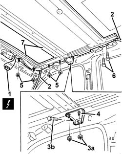

7030B10 sliding roof (assembly) - r+r with roof panel removed
- Path
- Procedures > 70 FITTINGS > 7030 SUN ROOF AND HOOD > 7030B sliding roof > 7030B10 sliding roof (assembly) - r+r with roof panel removed
- Kind
- repair procedure (removal / refitting; the operation number is the code)
- Applies to
- all engines; all production periods
- Interactive page
- https://sloeber94.github.io/elrnDB-a147/en/#/3025764
Applies to: all engines; all production periods
 Removing
Removing
 Refitting
RefittingIf possible, place the sun roof in the closed position.
1. Disconnect the electrical connection for the sun roof control unit.
 | Name | Connector |
|---|---|---|
1 | Sunroof connection |
2. From both sides of the car, disconnect the water drainage pipes.
3. Undo the nuts (3a) and bolts (3b) for the side brackets.
4. Remove the brackets.
5. Undo the nuts securing the sun roof.
6. Undo the bolts securing the sun roof.
7. Remove the sun roof.

Applies to: all engines; all production periods
Refitting
RemovingCheck that the sun roof components are not damaged.
Fit the sun roof.
Tighten the nuts and bolts securing the sun roof.
Position the side brackets and secure them with the nuts and bolts.
Connect the water drainage pipes.
Connect the motor electrical connections.
If necessary, 7030B17 sun-roof glass - fit
Test the sun-roof to ensure it is sliding properly.